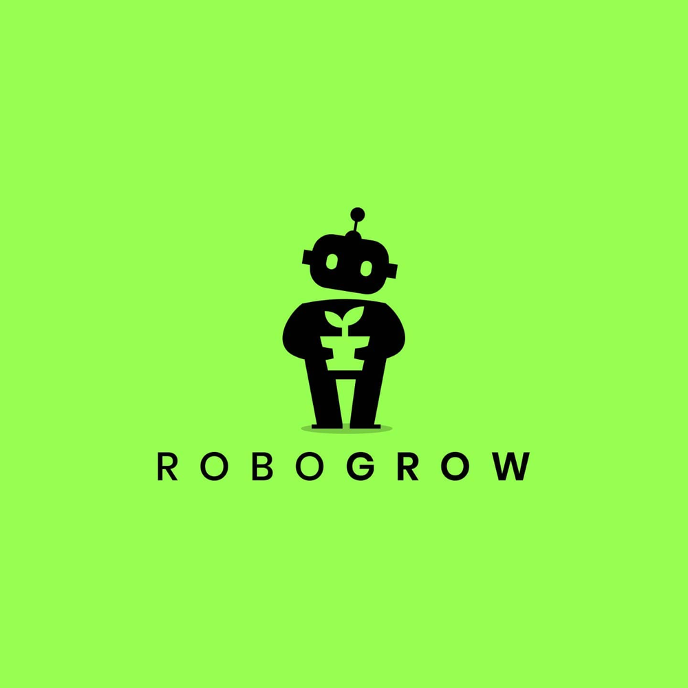
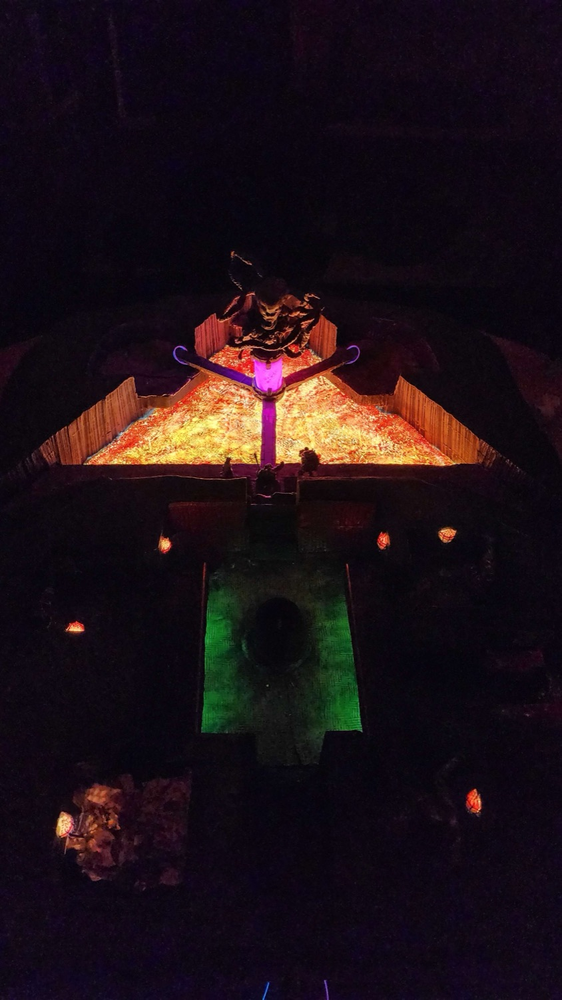

Est. 2013 · Software Engineer / Technical Lead
Shane Denom.me
I take software from whiteboard to enterprise. Most recently that meant architecting and launching a logistics platform that moved 2M+ tons of material in its first year. A builder at heart — when I'm not leading teams, I'm writing code for games, home automation, and electronics.
- Now
- Engineering Manager, Livegistics
- Years
- 13+
- Stack
- TypeScript · React / Native · Node · Postgres · GCP · C# · Kotlin
- Also
- Unity · Raspberry Pi · a soldering iron
Work
Four companies, thirteen years-
2023— Present
Livegistics
Engineering ManagerLead Developer
Leading engineering at a logistics startup — owning delivery of the v3 platform launch while staying a hands-on contributor across the stack.
- Launched a next-generation platform and migrated the entire existing customer base off v2 with zero churn, running 1:1 white-glove onboarding through the whole transition.
- Drove first-year adoption to 2M+ tons of material, 1M+ barrels, and 100K+ loads processed — while landing new clients in an entirely new product vertical.
- Championed early adoption of LLM developer tooling across the team, quadrupling commit velocity without loosening review standards.
- Authored and rolled out the engineering and product policies — code review standards, release process, product development workflow — that scaled the team's output.
- As Lead Developer: architected the next-gen platform from whiteboard to enterprise deployment, cut mobile error rates by 90% (measured in Sentry) through systematic triage, and designed a git-flow release pipeline with cascade merging for reliable multi-environment deploys.
-
2021— 2023
365 Retail Markets
Mobile Application Developer
- Built "smart cooler" systems — React Native modules bridged to Android hardware for unattended retail.
-
2017— 2021
CU Solutions Group
Senior Application Developer
- Designed and shipped multiple Java / Kotlin mobile applications, then led the transition to Node.js and React Native.
- Managed a portfolio of white-labelled applications and their release trains.
-
2013— 2017
Towbook
Application Developer
- Fourth employee at a small logistics startup. Started as an intern, taught myself mobile development, and grew into full ownership of the Android application — support tickets through architecture.
Games
Unity · C# · 25+ jams since 2019Two projects in long-form development, a jam build you can play right here without leaving the page, and a decade of weekend deadlines underneath them.
The jam ledger
| Year | Entry | Jam / Notes | Engine |
|---|
Linked titles are live on itch.io — most play straight in the browser. The rest survive only as repositories, and a few more are lost to dead hard drives and jam sites that shut down. Such is the format.
Workshop
Things with wires in themSoftware is where I work. This is where I go when I want the thing I made to sit on a table and be touched. Each of these has a full write-up.

Robogrow
A Raspberry Pi in a grow tent that reads the room and decides what to do about it. Sensors feed a Node service, the service throws 120v relays, and a web dashboard and Android app let me override any of it from anywhere. Ten years, four rewrites, still running.
Read the build
The Tomb Battle Map
A tiered tabletop battle map for the finale of a D&D campaign, carved from foam and wired with three independent LED circuits — a drifting lava gradient, four flickering torches, and a sickly green shrine that breathes.
Read the buildMethod
How I work with AIAgentic AI has changed how I work more in the past year than anything else in my career.
I have watched it help a small team quadruple its commit output — and more importantly, I have watched the confidence and quality of that work rise at the same time. These tools are only as good as the direction they are given, though.
My day now looks less heads-down problem solving and more like a mix of manager, designer, and QA: writing clear specifications up front, reviewing generated code the same way I would review a junior developer's pull request, and testing the result against what was actually asked for.
I lean on tools like GitHub's Spec Kit and practices like Behavior Driven Development to keep requirements written in plain language, so the people on the team stay the source of truth for what gets built and why. I have also learned when to put the tools down, because some problems are still faster and safer to solve by hand.
- Claude Code
- Cursor
- Gemini
- Google AI Studio / Vertex AI
- Copilot
- Devin.ai
Contact
Open to conversationsIf you're building something that has to work in the real world — trucks, sensors, material, people who don't have time for a bad app — I'd like to hear about it.
- Email sdenomme15 [at] gmail.com
- Phone(810) 278-0562
- LinkedIn/in/shane-denomme
- GitHub@sdenom01
- ResumeDownload PDF